2026-07-10~17 전시장에서 취득된 모바일 로봇 인식 로그 2종. 타깃은 전시장 중앙의 UAM 기체 목업 (H-PORT 캐빈 + 상부 로터 마스트 + 4로터, 전시 받침대 위 거치)이며 로봇과의 거리는 4~11m이다.
| 폴더 | 스냅샷 | 구성 | 비고 |
|---|---|---|---|
robot_log (3.3GB) | sam6d 152 · icp_only 258 | rgb/depth/lidar + estimate.json (+SAM-6D 오버레이) | SAM-6D 검출 성공 세션 위주 — 150/152 검출, 로그 포즈를 참조로 사용 |
robot_log_essential (4.5GB) | sam6d 222 · icp_only 20 | rgb/depth/lidar/segmentation + fg(mcap 스냅샷) | SAM-6D 검출 실패 세션 (6/222) — 참조 포즈 없음, 육안 판정 |
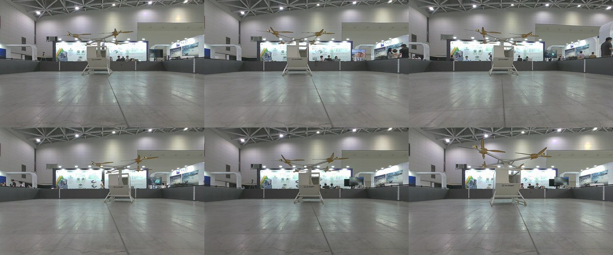
로그에 CameraInfo가 없어 내참을 알 수 없었다. depth.png(uint16 mm, 충전율 ~10%)가
Ruby128 LiDAR의 카메라 투영임을 확인하고, mcap의 tf_static 외참으로 LiDAR 점군을 후보 K로 투영해
depth와의 잔차를 최소화하는 4-파라미터 최적화로 내참을 복원했다:
K = (fx 608.58, fy 608.86, cx 647.71, cy 407.74) @1280×800 — inlier(5cm) 96.5%, 잔차 중앙 4.2mm. 이후 모든 평가는 depth.png 역투영 점군(프레임당 ~9만pt, 0.3~12m 크롭)을 입력으로 사용.
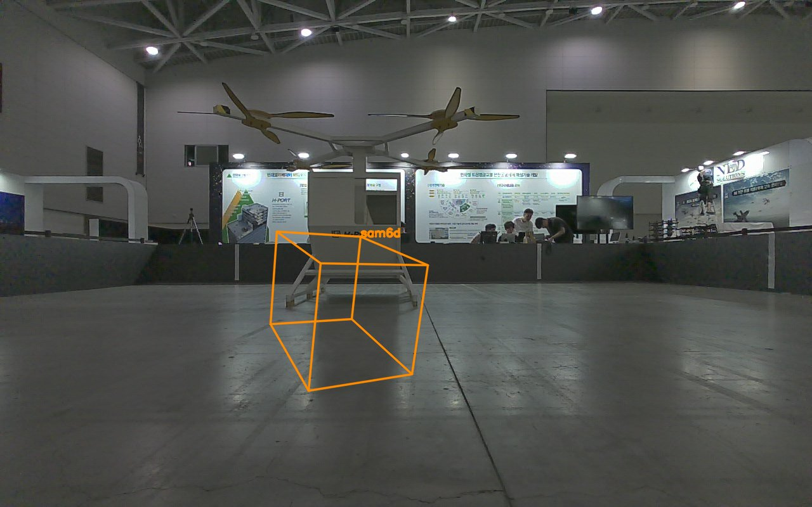
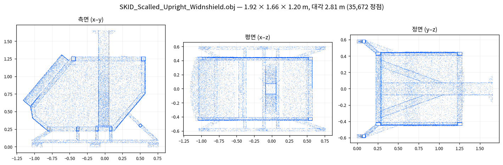
| 항목 | 내용 |
|---|---|
| 모드 B — 풀 파이프라인 | S1(평면제거+클러스터) → 크기 게이트 → 상위 5후보 각각 S2 TDF 매칭 → coarse → projective ICP → S4 검증, 증거 최상 후보 채택. S1은 실내 장면에 맞춰 튜닝: ransac_dist 0.03 / max_planes 3 / voxel 0.15 (기본값에선 바닥 링 잔재가 후보를 지배). |
| 모드 A — ROI 보조 | 로그된 SAM-6D 위치 반경 2.1m(0.75×직경) crop으로 S1 우회 — S2·coarse·S4를 절연 평가 (06의 모드 A와 동일 취지). SAM-6D 검출이 있는 37샘플에서만 가능. |
| 판정 | S4 검증기 원 설정 그대로: free_viol > 0.15 무조건 REJECT(하드 가드), p≥θacc ACCEPT. 직립 프리이어 OFF. |
| 정합 판단 기준 | 참조 있는 샘플: ‖Δt‖ 대 SAM-6D 로그 위치(<1m = 기체 안착). 참조 없는 essential: 추정 위치·오버레이 육안 판정. |
| 지표 | 모드 A (ROI 보조, n=37) | 모드 B (풀, n=70) |
|---|---|---|
| 기체 안착률 (‖Δt‖<1m, 참조 있는 37건) | 36/37 (97%) · 중앙 0.78m | 18/37 (49%) · 중앙 3.73m |
| 판정 분포 | ACCEPT 5 · REJECT 32 | ACCEPT 37 · REJECT 32 · UNCERTAIN 1 |
| ACCEPT 중 기체 정위치 | 5/5 (오수락 0) | 2/37 — 오수락 35건(95%) |
| 기체 안착인데 REJECT (free 가드) | 31/36 (86%) | 16/18 (89%) |
| 성공례 정합 통계 (중앙) | inlier 0.73 · 커버리지 0.54 | inlier 0.79 · 커버리지 0.61 |
| 프레임당 시간 (중앙, 데스크톱 CPU) | 15.5s | 28.9s |
essential(참조 없음) 모드 B 35건 상세: ACCEPT 21건의 추정 위치는 원거리 부스·구조물(z≈10.7~11.2m) 17건 · 바닥 스트립(z≈1.0m) 3건 · 우측 구조물(8.2m) 1건 — 전부 오수락(기체는 해당 세션에서 z≈4.4m). REJECT 13 · UNCERTAIN 1.
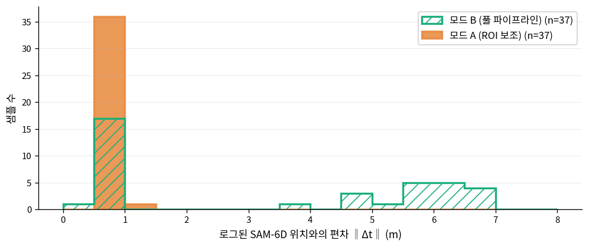
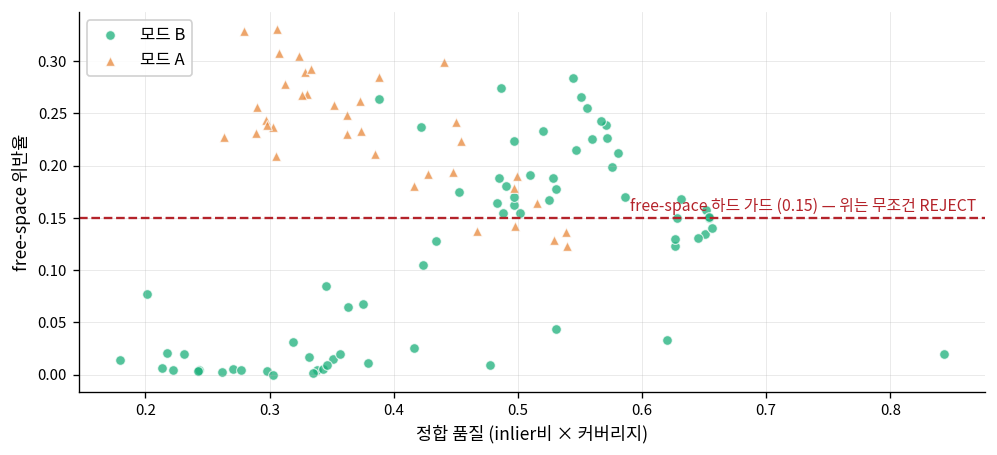
각 패널: 파랑=LiDAR 관측(1/4 샘플) · 초록=모드 B 추정 포즈의 모델 투영 · 주황=모드 A · 빨간 ×=SAM-6D 로그 위치.
전체 70장은 eval/external_test/uam_results/*.jpg.
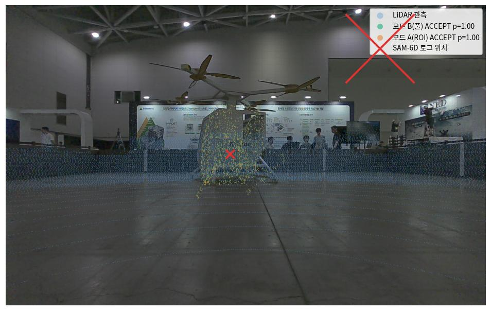
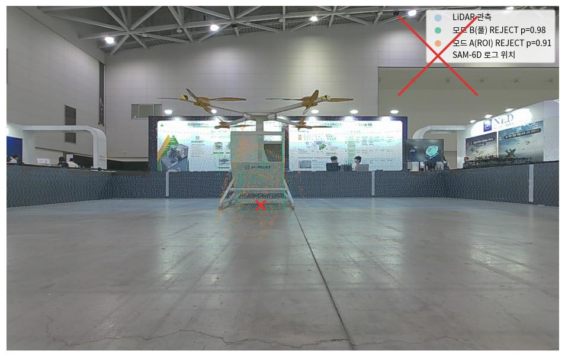
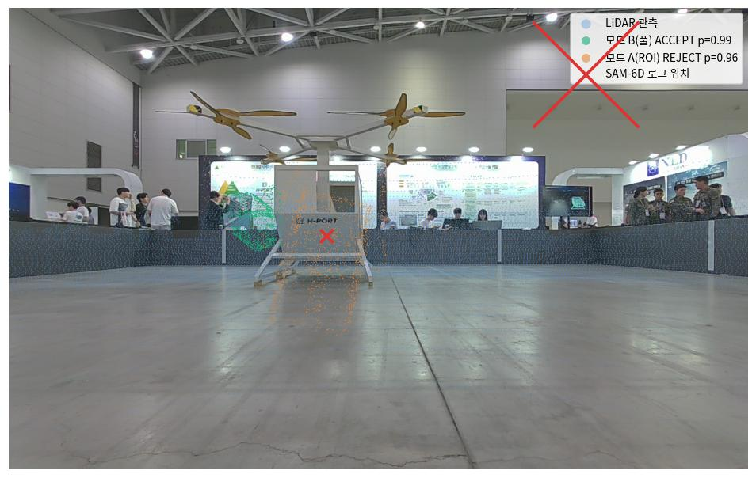
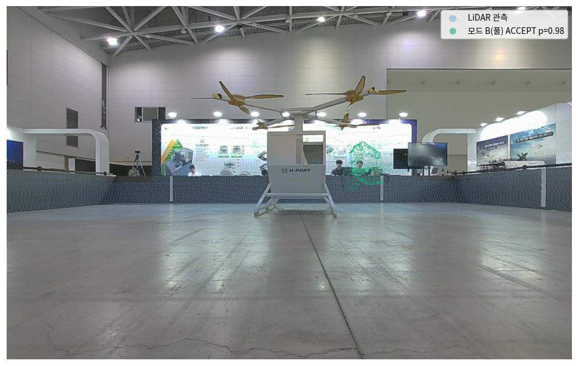
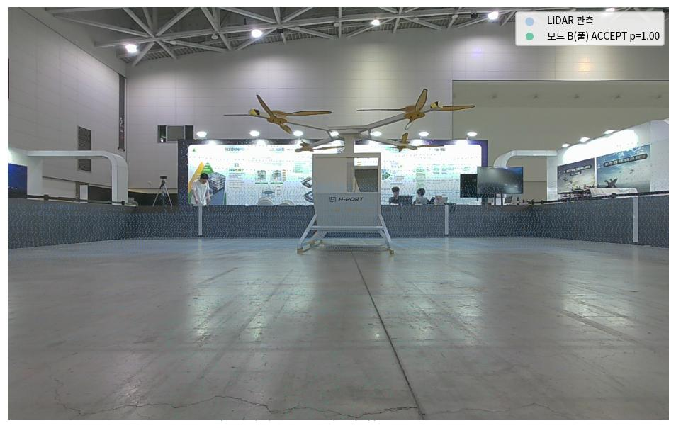
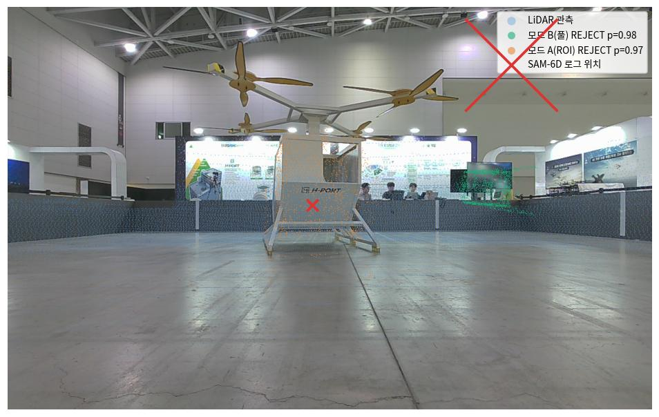
| 관찰 | 해석 · 로드맵 연결 |
|---|---|
| ① 기하 스택의 리콜은 실환경에서도 산다 | ROI만 주어지면 97%가 기체에 안착(중앙 0.78m — 참조 자체 오프셋 수준). 04 합성(4.9mm/0.71°)·06 모드 A(56%/90%)에 이어, S2 TDF 정합→coarse→ICP 사슬은 무학습 상태에서도 재사용 가능한 자산임을 실기 데이터로 3번째 확인. |
| ② 검증기 판정이 역전됨 — 부분 CAD가 방아쇠 | free-space 가드가 정포즈의 87%를 기각하고 배경 평면 오포즈의 95%를 통과시켰다. 06의 "도메인 이전 실패(오수락 40%)"보다 심한 형태 — 원인이 가림이 아니라 CAD에 없는 실물 구조(로터·받침대)라서, 정포즈일수록 위반이 커진다. → M3-3 보정 셋에 "부분 CAD/부착물" 유형 필수, free-space 검사에 미모델 영역 마스크 또는 소프트 가드 필요. 05 간과점 6-A(오포즈 카탈로그)의 신규 항목. |
| ③ S1 클러터 한계 — 그러나 06보다는 낫다 | 클러스터 정선택 49% (06 모드 B 5% 대비 개선 — 바닥 평면 제거가 유효한 장면 구조 덕). 실패는 게시판·부스 등 대형 평면이 크기 게이트를 통과해서다. → M1 EViT-SAM 마스크 경로(RGB 증거로 후보 압축)의 근거 재확인. |
| ④ 속도: 후보 소진이 지배 | 프레임 중앙 28.9s = 후보 5개 × (ICP+검증 6~10s). S2 매칭은 후보당 0.3s로 문제없다. 후보가 1개로 압축되면(M1) 그것만으로 ~5×, ICP/free-space 벡터화·조기 종료로 추가 여지. 이 러너는 정확도 평가용 — Jetson 지연 평가는 eval/latency 별도. |
| ⑤ 참조 품질이 평가 해상도를 제한 | 탑재 SAM-6D 포즈(점수 0.02~0.15, ~0.5m 오프셋)가 유일한 참조라 mm급 검증 불가. essential 세션은 참조가 거의 없다(222건 중 검출 6건). → 실기 정밀도 주장에는 태깅된 평가셋(마커/토탈스테이션 GT)이 선행돼야 한다 (05 간과점 3-1). |
# 평가 (폴더당 35샘플, ~35분 @데스크톱 CPU) — 결과 JSON + 샘플별 오버레이 python3 eval/external_test/run_uam_log.py --n 35 # 집계 + 보고서 그림 (docs/assets_07) python3 eval/external_test/make_uam_report_figs.py # 내참 캘리브레이션 근거: LiDAR(pcd)+tf_static(mcap)↔depth.png 정합 (스크래치, 수치는 run_uam_log.py에 고정) # K = (608.581, 608.858, 647.712, 407.744) — inlier@5cm 96.5%, 잔차 중앙 4.2mm
본 보고서 수치 정본: eval/external_test/uam_results/uam_results.json (70레코드 — 모드별 포즈·검증 통계·시간 포함).
케이스 오버레이 원본 70장: eval/external_test/uam_results/*.jpg.